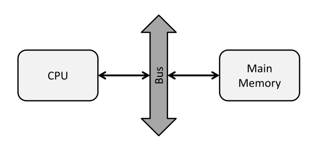
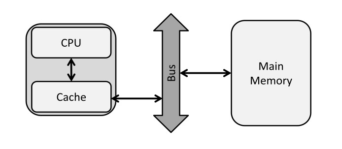
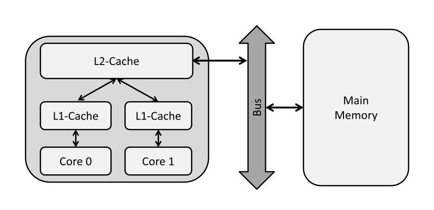
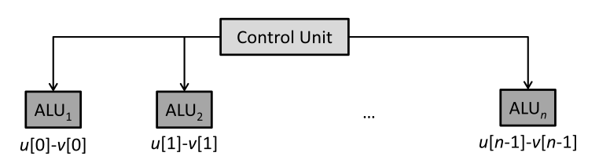
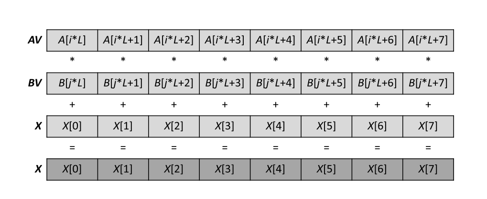
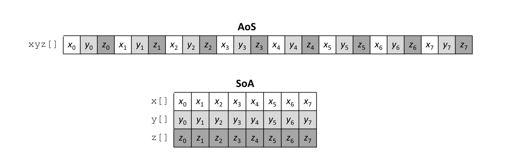

En la arquitectura de von Neumann el CPU se conecta con la memoria RAM a través de un bus.
Tiempo de cómputo en un CPU es mucho menor que el tiempo de comunicación a través del bus: cuello de botella de von Neumann.
Ejemplo: 8 core CPU, 3 GHz frecuencia del reloj, supongamos 16 flops (precisión doble) por ciclo del reloj.
Rendimiento de cómputo peak $3$ GHz $\times 8 \times 16 = 384$ GFlops/s.
Transferencia de datos peak del módulo de DRAM $51.2$ GB/s.
Considerar el producto punto de dos vectores largos ($n = 2^{30}$):
double dotp = 0.0;
for (int i = 0; i < n; i++)
dotp += u[i] * v[i];Dos operaciones por iteración: $2 \cdot n = 2^{31}$ Flops. Transferencia de la memoria de $2^{31} \times 8$ B $= 16$ GB.
Suponiendo simultaneidad de cómputo y acceso a la memoria: t_{exec} \geq \text{max}(t_{comp},t_{mem}) = 312.5$ ms.
El tiempo de transferencia de datos domina. Ocupamos los datos una vez, sin reuso: el algoritmo es limitado por memoria (memory-bound).
Rendimiento máximo posible es $2^{31} \text{Flop}/312.5 \text{ms} = 6.4$ GFlop/s, 2% del rendimiento peak del computador.
Para aliviar este problema, los CPUs tienen una memoria rápida "on-board" que se llama cache.
Típicamente hay $3$ niveles de cache: L1, L2 y L3.
L1 es pequeño y rápido, L3 es grande pero lento. Los cache pueden ser privados para un sólo core o compartidos entre varios cores.
Considerar el mismo ejemplo, 8-core 3 GHz CPU con 384 GFlop/s rendimiento peak, bandwidth de la memoria principal de 51.2 GB/s.
Ahora supongamos que hay un cache de 512 KB, con tiempo de acceso de un ciclo del reloj (velocidad de un registro).
Ejemplo: producto de dos matrices de $n \times n$ con $n = 128$:
for (int i = 0; i < n; i++)
for (int j = 0; j < n; j++) {
double dotp = 0.0;
for (int k = 0; k < n; k++)
dotp += U[i][k] * V[k][j];
W[i][j] = dotp;
}Las dimensiones de las matrices son pequeñas: $128 \times 128 \times 8$ B $= 128$ KB por matriz (precisión doble), así que todas ($3 \times 128 = 384$ KB) caben en el cache.
Para cada uno de los $n^2$ valores en $W$ calculamos un producto punto con $2\cdot n$ operaciones, así que tenemos $2\cdot n^3 = 2\cdot 128^3 = 2^{22}$ Flops.
Tiempo de cómputo ahora es mayor que el tiempo de transferencia de datos: el algoritmo es limitado por el cómputo (compute-bound).
Suponiendo que el cómputo y la transferencia ocurren secuencialmente $t_{exec} \geq t_{comp} + t_{mem} = 10.4 \mu\text{s} + 7.5 \mu\text{s} = 17.9 \mu\text{s}$.
Este es $2^{22} \text{Flop}/17.9 \mu\text{s} = 223$ GFlop/s, 60% del rendimiento peak.
Considerar el siguiente código para determinar el valor máximo de un array $A$ de tamaño $n$ (donde los elementos de $A$ están guardados contiguamente en la memoria).
for (int i = 0; i < n; i++)
maximum = max(A[i], maximum);El "hit ratio" en este ejemplo es 87.5%.
#include <stdio.h>
#include <stdint.h>
#include <stdlib.h>
#include <time.h>
int main() {
const uint64_t m = 1 << 10;
const uint64_t n = 1 << 10;
const uint64_t l = 1 << 10;
clock_t t;
t = clock();
float* A = malloc(sizeof(float)*m*l);
float* B = malloc(sizeof(float)*l*n);
float* Bt = malloc(sizeof(float)*n*l);
float* C = malloc(sizeof(float)*m*n);
for (uint64_t i = 0; i < m*l; i ++){
A[i] = 0.0;
B[i] = 0.0;
Bt[i] = 0.0;
C[i] = 0.0;
}
t = clock() - t;
double time_taken = ((double)t)/CLOCKS_PER_SEC;
printf("init %f\n",time_taken);
t = clock();
for (uint64_t i = 0; i < m; i++) {
for (uint64_t j = 0; j < n; j++) {
float accum = 0;
for (uint64_t k = 0; k < l; k++) {
accum += A[i*l+k]*B[k*n+j];
}
C[i*n+j] = accum;
}
}
t = clock() - t;
time_taken = ((double)t)/CLOCKS_PER_SEC;
printf("naive %f\n",time_taken);
t = clock();
for (uint64_t k = 0; k < l; k++) {
for (uint64_t j = 0; j < n; j++) {
Bt[j*l+k] = B[k*n+j];
}
}
t = clock() - t;
time_taken = ((double)t)/CLOCKS_PER_SEC;
printf("transpose %f\n",time_taken);
t = clock();
for (uint64_t i = 0; i < m; i++) {
for (uint64_t j = 0; j < n; j++) {
float accum = 0;
for (uint64_t k = 0; k < l; k++) {
accum += A[i*l+k]*Bt[j*l+k];
}
C[i*n+j] = accum;
}
}
t = clock() - t;
time_taken = ((double)t)/CLOCKS_PER_SEC;
printf("transpose_mult %f\n",time_taken);
return 0;
}EL primer ciclo utiliza un método "ingenuo", donde el acceso a la matriz $B$ no es contiguo.
Los valores en fila $k$ y $k+1$ están separados por $l \times \text{sizeof}(\text{float})$ bytes en memoria, y no estarán en la misma línea de cache.
Si $l$ es suficientemente grande el cache estará borrado antes de que podamos leer el valor $k+1$, así que no aprovecharemos del cache.
El último ciclo utiliza la transpuesta de $B$, permitiendo contigüidad en el acceso de la memoria y por lo tanto más "cache hits".
Taxonomía de Flynn:
Los CPUs y GPUs modernos aprovechan de varios niveles de paralelismo.
Se ejecuta la misma instrucción en diferentes datos.
Ejemplo con un ciclo secuencial:
for (i = 0; i < n; i++)
w[i] = u[i] - v[i];Queremos implementar este ciclo en una manera SIMD.
Cada iteración es independiente, así que es fácil paralelizar.
No es tan fácil paralelizar en este ejemplo, por la condicional:
for (i = 0; i < n; i++)
if (u[i] > 0)
w[i] = u[i] - v[i];
else
w[i] = u[i] + v[i];Se puede paralelizar en una manera SIMD si permitimos que una unidad de procesamiento puede ser inactivo.
La condicional reduce la eficiencia de la implementación SIMD por 50%.
Soporte para vectorización con operaciones SIMD es común en los CPUs modernos. Hay un conjunto de instrucciones (instruction set) para su implementación.
AVX: registros vectoriales de 256-bit (8 floats).
AVX-512: registros vectoriales de 512-bit (16 floats).
Las intrínsecas consisten de funciones escritas en ensamblador y definiciones de tipos de datos que se puede usar en código de C y C++.
Ejemplo: suma de dos registros de AVX 256-bit:
__m256 a,b,c; // Declarar registros AVX
... // Initializar a y b
c = __m256_add_ps(a,b); // c[0:8] = a[0:8] + b[0:8]Una variable de tipo __m256 representa un registro de 256-bit que almacena $8$ floats de $32$-bit.
La intrínseca AVX __m256_add_ps realiza una suma paralela en manera SIMD (suma paralela de $8$ floats).
#include <stdint.h>
#include <stdio.h>
#include <immintrin.h>
#include <time.h>
void plain_vecadd(float* A, float* B, float* C, uint64_t N){
for (uint64_t i = 0; i < N; i++){
C[i] = A[i] + B[i];
}
}
void avx2_vecadd(float* A, float* B, float* C, uint64_t N){
__m256 X;
for (uint64_t i = 0; i < N; i += 8){
__m256 AV = _mm256_load_ps(A+i);
__m256 BV = _mm256_load_ps(B+i);
X = _mm256_add_ps(AV,BV);
_mm256_store_ps(C+i, X);
}
}
void populate_vectors(float* A, float* B, uint64_t N){
for (uint64_t i = 0; i < N; i++){
A[i] = i*1.0;
B[i] = i*2.0;
}
}
int main(){
clock_t begin, end;
double time_spent;
uint64_t N = 1 << 20;
printf("Vector elements: %lu\n",N);
uint64_t error_flag = 0;
float* A = _mm_malloc(sizeof(float)*N, 32); //align on 32-byte boundaries for AVX registers
float* B = _mm_malloc(sizeof(float)*N, 32);
float* C = _mm_malloc(sizeof(float)*N, 32);
float check;
populate_vectors(A, B, N);
begin = clock();
plain_vecadd(A, B, C, N);
end = clock();
time_spent = (double)(end - begin) / CLOCKS_PER_SEC;
printf("Serial add: %f\n",time_spent);
begin = clock();
avx2_vecadd(A, B, C, N);
end = clock();
time_spent = (double)(end - begin) / CLOCKS_PER_SEC;
printf("Vector add: %f\n",time_spent);
for (uint64_t i = 0; i < N; i++){
check = i*3.0 - C[i];
if (check != 0.0){
error_flag = 1;
}
}
if (error_flag == 1){
printf("Error in sum.\n");
}
}gcc -march=skylake vector_addition.c -o vector_addition.x
En el siguiente código utilizamos intrínsecas de AVX2 (una extensión de AVX) para multiplicación de matrices $A \times B = C$.
Ilustración de la intrínseca _mm256_fmadd_ps(AV,BV,X) (utilizada en el siguiente código)
#include <cstdint> // uint32_t
#include <iostream> // std::cout
#include <immintrin.h> // AVX intrinsics
void plain_tmm(float* A,
float* B,
float* C,
uint64_t M,
uint64_t L,
uint64_t N) {
for (uint64_t i = 0; i < M; i++)
for (uint64_t j = 0; j < N; j++) {
float accum = float(0);
for (uint64_t k = 0; k < L; k++)
accum += A[i*L+k]*B[j*L+k];
C[i*N+j] = accum;
}
}
void avx2_tmm(float* A,
float* B,
float* C,
uint64_t M,
uint64_t L,
uint64_t N) {
for (uint64_t i = 0; i < M; i++)
for (uint64_t j = 0; j < N; j++) {
__m256 X = _mm256_setzero_ps();
for (uint64_t k = 0; k < L; k += 8) {
const __m256 AV = _mm256_load_ps(A+i*L+k);
const __m256 BV = _mm256_load_ps(B+j*L+k);
X = _mm256_fmadd_ps(AV,BV,X);
}
C[i*N+j] = hsum_avx(X);
}
}Ejercicio: implementar la función hsum_avx.
La organización de los datos tiene un impacto en la eficiencia de una paralelización SIMD.
Considerar $n$ vectores en 3D.
AoS sería un sólo array de $3n$ elementos. SoA sería $3$ arrays de $n$ elementos cada uno.
Definición AoS:
float* xyz = malloc(sizeof(float)*3*n);Definición SoA:
float* x = malloc(sizeof(float)*n);
float* y = malloc(sizeof(float)*n);
float* z = malloc(sizeof(float)*n);$\hat{v}_i = \frac{v_i}{||v_i||} = \left( \frac{x_i}{\rho_i}, \frac{y_i}{\rho_i}, \frac{z_i}{\rho_i} \right)$ where $\rho_i = \sqrt{x_i^2 + y_i^2 + z_i^2}$
Esta norma se puede calcular para datos AoS en un código secuencial así:
void plain_aos_norm(float* xyz, uint64_t length) {
for (uint64_t i = 0; i < 3*length; i += 3) {
const float x = xyz[i+0];
const float y = xyz[i+1];
const float z = xyz[i+2];
float irho = 1.0f/sqrtf(x*x+y*y+z*z);
xyz[i+0] *= irho;
xyz[i+1] *= irho;
xyz[i+2] *= irho;
}
}Vectorización de esta operación de normalizar (utilizando AoS) es ineficiente porque:
irho requiere operaciones entre canales horizontales de los registros, resultando en un sólo valor para el cálculo de la raíz cuadrada inversa.Vectorización es mucho más eficiente con SoA:
void avx_soa_norm(float* x, float* y, float* z, uint64_t length) {
for (uint64_t i = 0; i < length; i += 8) {
__m256 X = _mm256_load_ps(x+i);
__m256 Y = _mm256_load_ps(y+i);
__m256 Z = _mm256_load_ps(z+i);
__m256 R = _mm256_fmadd_ps(X, X,
_mm256_fmadd_ps(Y, Y,
_mm256_mul_ps (Z, Z)));
R = _mm256_rsqrt_ps(R);
_mm256_store_ps(x+i, _mm256_mul_ps(X, R));
_mm256_store_ps(y+i, _mm256_mul_ps(Y, R));
_mm256_store_ps(z+i, _mm256_mul_ps(Z, R));
}
}| __m256 | 256-bit registro para $8$ valores de float |
| __m256d | 256-bit registro para $4$ valores de double |
| __m256i | 256-bit registro para int |
| __m128 | 128-bit registro para $4$ floats |
| __m128d | 128-bit registro para $2$ double |
Funciones: _mm256_<operator>_<suffix>(data_type param1, data_type param2, data_type param3)
Los operadores son add, sub, etc. Sufijo corresponde al tipo de datos en lo cuál estamos actuando.
Esta información es de la página web de Intel, pero AVX está disponible también con AMD.